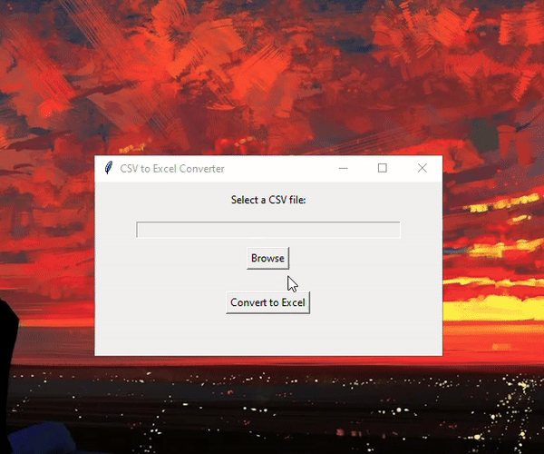

CSV to Excel Converter
A Python-based application to easily convert CSV files into Excel format.
Features
- Simple interface for selecting CSV files.
- Converts CSV files to `.xlsx` format with a single click.
- Supports saving the output to a user-specified location.
Demo

Source Code
Download and run the source code locally:
View the Code on GitHub